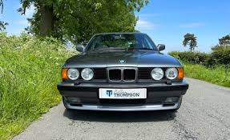
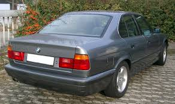
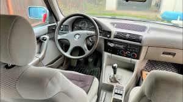

BMW E34
The Third Generation of the 5 Series (1987 - 1996)



Car Specifications
- Engine Options: 1.8L Inline-4 to 3.8L Inline-6
- Power: 113 - 340 hp
- Torque: 162 - 400 Nm
- Transmission: 5-speed manual, 4-speed automatic
- Top Speed: 180 km/h (112 mph) - 250 km/h (155 mph, M5)
- 0-100 km/h: ~5.9 seconds (M5)
- Fuel Economy: ~8 - 13 L/100 km
- Production Years: 1987 - 1996
- Body Style: 4-door sedan, 5-door touring
- Drive Type: Rear-Wheel Drive, optional All-Wheel Drive
- Weight: 1,300 - 1,700 kg
About the BMW E34
The BMW E34 marked a significant leap in luxury and performance for the 5 Series. Introduced in 1987, it featured advanced technology, refined styling, and enhanced safety features.
The E34 also offered a wide range of engine options and was available in sedan and touring (wagon) variants, catering to various needs of BMW enthusiasts.
Image Gallery


Key Features
- Performance: Introduction of the powerful M5 variant with a 3.8L Inline-6 engine.
- Safety: Features such as airbags, ABS, and advanced crash protection.
- Design: Sleek exterior design with a focus on aerodynamics.
Technical Information
The BMW E34 was powered by a range of advanced engines, offering reliability and performance:
Engine Codes and Iterations
- M20: 2.0L and 2.5L Inline-6, used in 520i and 525i.
- M30: 3.0L and 3.5L Inline-6, used in 530i and 535i.
- M50: 2.0L and 2.5L Inline-6, introduced later for improved efficiency.
- S38: 3.6L and 3.8L Inline-6, used in the M5.
Conclusion
The BMW E34 was a masterpiece of engineering and design, setting new standards in the executive sedan segment. With its balanced blend of luxury, technology, and performance, it remains a beloved classic among BMW enthusiasts.